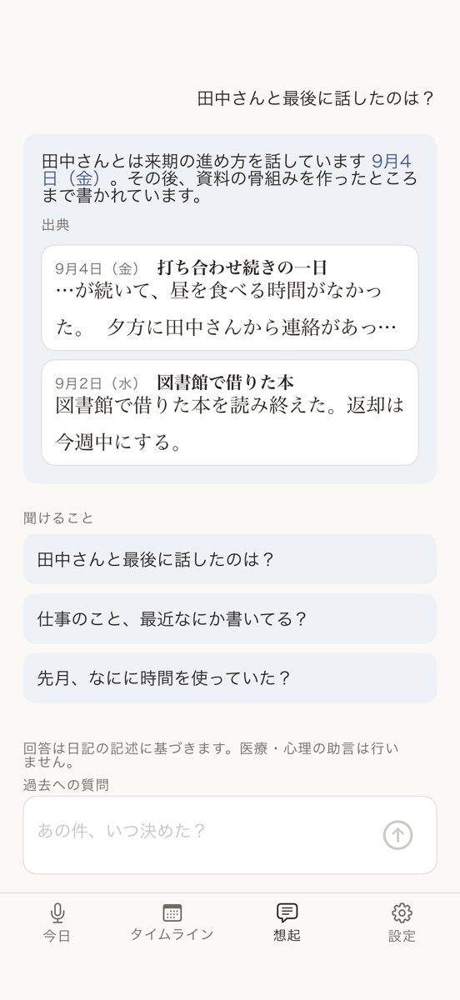
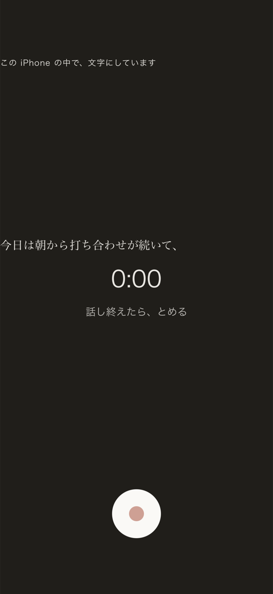
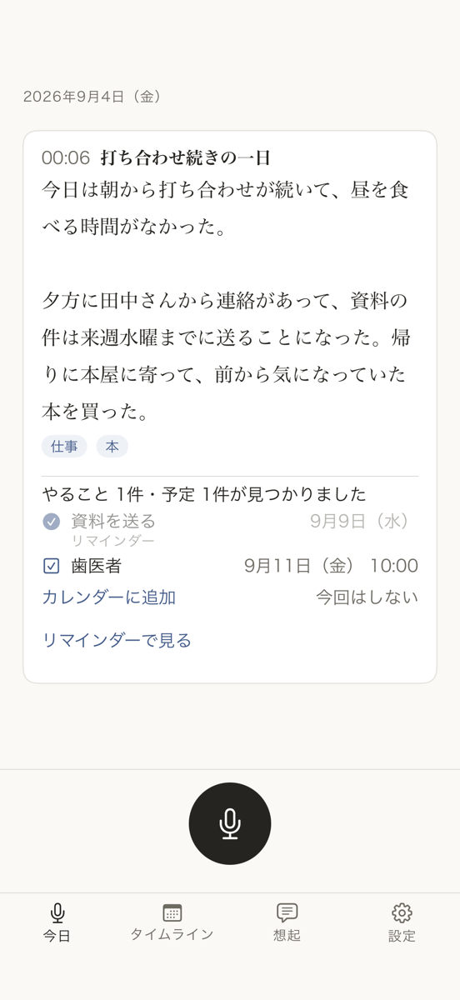
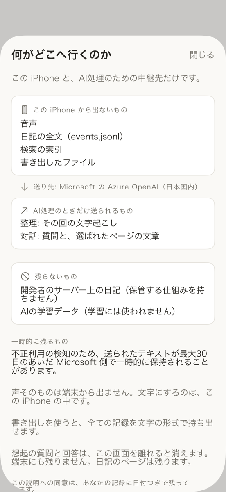

90秒話すだけ。過去の自分に聞ける日記。
ひもとくは、90秒話すだけで日記が残り、出典つきで過去の自分に質問できる iPhone 用の日記アプリです。日記は端末にだけ保存され、AI の学習に使われません。
日記を書く時間が取れない人にも、紙の日記帳をどこかにしまい込んでいる人にも。
過去の自分に、聞ける
たまったページに、ことばで質問できます。答えには出典（その日のページ）が付き、根拠のないことは書きません。「あの件、いつ決めた？」「去年の今ごろ、何をしていた？」— 記録に無いことは「無い」とお伝えします。

90秒、話すだけ
その日のことを声で置いておくと、この iPhone の中で文字になり、読める文章のページに整います。書く時間も、書く気力も要りません。

やることは、ワンタップで
やること・予定が見つかると、リマインダーとカレンダーに追加できます。追加するのは、あなたがタップしたときだけです。

紙の日記帳も、まるごと
何年分の日記帳も、撮って取り込めます。読み取れた分だけ、タイムラインとことばの検索から見つかるようになります。元の写真もそのまま残ります。
この iPhone の中だけ
日記は開発者のサーバーに保存されません。AI の学習に使われることもありません。声そのものは端末から出ません。文字にするのは、この iPhone の中です。整理と質問のときだけ、その回のテキストが Microsoft のサーバー（日本国内）へ送られます。くわしくはプライバシーポリシーをご覧ください。

いくら
無料: 記録・文字起こし・AI整理（月45回）・タイムライン・ことばの検索・紙の取込・書き出し。過去への質問は通算3問まで無料です。
プラス（月額¥980・7日間無料）: 過去への質問と意味の近さでの検索が使えるようになり、記録と整理の回数の上限がなくなります。無料期間が終わると自動で更新されます。期間中にやめると料金はかかりません。無料のままでも、記録・整理・書き出しはずっと使えます。
よくある質問
無料でできることは何ですか？
記録・文字起こし・AI整理（月45回）・タイムライン・ことばの検索・紙の取込・書き出しは無料です。過去への質問は通算3問まで無料でお試しいただけます。
料金と解約はどうなりますか？
プラスは月額¥980、7日間無料でお試しいただけます。無料期間が終わると自動で更新されます。期間中にやめると料金はかかりません。解約はiOSの「サブスクリプション」設定からいつでもできます。無料のままでも、記録・整理・書き出しはずっと使えます。
データはどこに保存されますか？
日記は開発者のサーバーに保存されません（保管する仕組みを持ちません）。整理と質問のときだけ、その回のテキストがAI処理のためMicrosoftのサーバー（日本国内）へ送られます。不正利用の検知のため、最大30日のあいだ一時的に保持されることがあります。AIの学習には使われません。
音声はどこかに送られますか？
声そのものは端末から出ません。文字にするのは、このiPhoneの中です。
紙の日記の取込は、どのくらい読み取れますか？
読み取れた分だけ、タイムラインとことばの検索から見つかるようになります。手書きの崩し字など、読み取れない文字もあります。元の写真はそのまま残ります。
対応言語と端末を教えてください。
iOS 17以降のiPhoneに対応しています。言語は日本語と英語です。
記録に無いことを聞いたらどうなりますか？
「その記録は見つかりませんでした」とお伝えし、近い時期のページをご案内します。記録に無いことを、あるかのようにはお答えしません。
書き出しはできますか？
いつでもMarkdownと音声で書き出せます。書き出した内容は、ほかのアプリでも開ける文字の形式です。